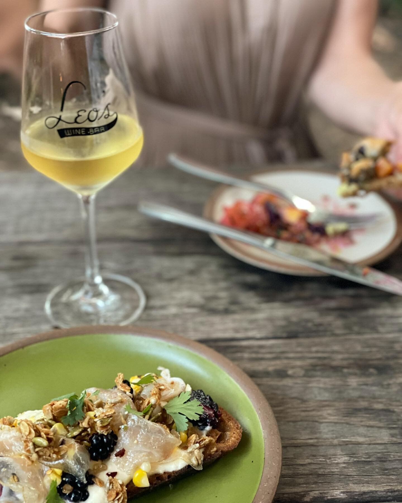

Food & Dining
The Bull and Beggar

Source: https://www.thebullandbeggar.com/
The Bull and Beggar is a casual fine dining restaruant located in the River Arts District. They have European-inspired Appalachian cuisine such as sweet corn soup, steak frites, and chicken ballotine provençale. Be sure to check out their extensive wine and cocktail menu.
Butterpunk

Source: https://www.yahoo.com/lifestyle/articles/asheville-sandwich-made-usa-todays-090211872.html
Also in the River Arts District, ButterPunk is a colorful quirky bakery and cafe. Biscuits are made from scratch daily (and you can get them by the dozen!), and have a wide variety of breakfast and lunch sandwiches, coffees, and sweet treats.
Leo's House of Thirst

Source: https://www.leosavl.com/menus
Whether you need espresso in the morning or wine in the evening, Leo's House of Thirst is there fo you in West Asheville.